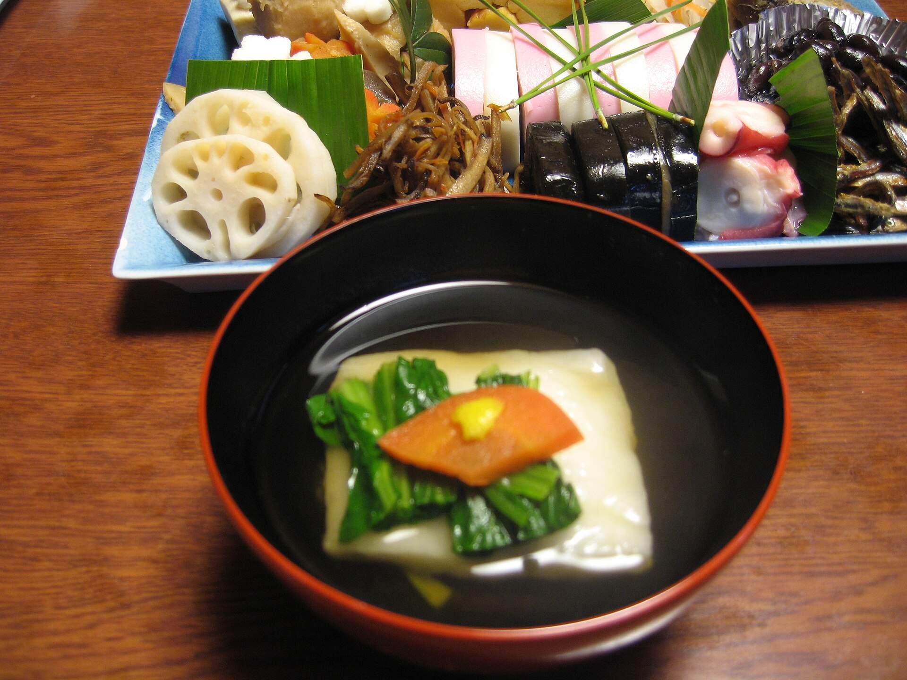
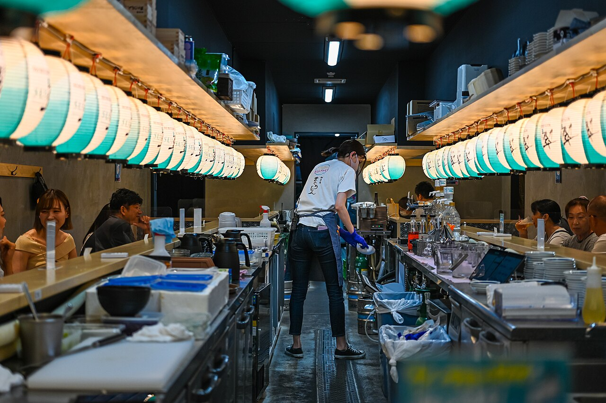

住日本幹嘛啦
住日本幹嘛啦
2027 年おせち的截止日一家一個樣，11 月底就有兩道門檻
セブン-イレブン的早割到 11 月 30 日，高島屋用超商付款的人 11 月 28 日就截止，百貨三家的線上截止落在 12 月 21 日到 25 日
新店、台灣味、特賣，還有買東西的眉角。

セブン-イレブン的早割到 11 月 30 日，高島屋用超商付款的人 11 月 28 日就截止，百貨三家的線上截止落在 12 月 21 日到 25 日

本家個人會員年費 5,280 日圓，再販店把大包裝拆成小份，住市區又沒車的人多了一個買法

食券機、隔板吧檯、一人一台烤爐，東京的店把一個人吃飯設計成了日常

五反田與飯田橋有專門店，押上 11 月 20 日起有期間限定蛋餅，在家也能用豆漿和醋打底自己做

25 日是很多公司的發薪日，那天晚上的小奢侈和半價便當，是一整個月裡最誠實的一餐

飲料先點齊，涼菜墊胃、空杯隨手補、碳水收尾，酒量反而排在後面

傍晚的特價巡邏，看懂貼紙再下手

冷凍食品適合囤貨，生鮮還是要多比價